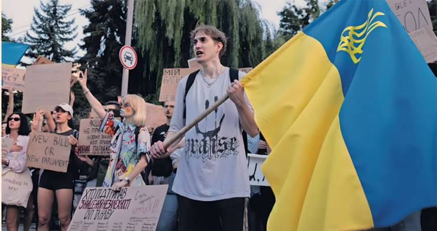

By Christopher Miller — Kyiv
Ukraine’s top anti-corruption prosecutor has warned that his agency will face more political pressure and smear campaigns, despite President Volodymyr Zelenskyy’s U-turn on the office’s independence after rare wartime protests and a backlash from Western allies.
Oleksandr Klymenko, head of Ukraine’s Specialised Anti-Corruption Prosecutor's Office (Sapo), in an interview with the Financial Times, described recent moves against his agency as part of a “co-ordinated” effort by senior government officials. The pressure culminated in Zelenskyy signing a law last week that placed Sapo and its law enforcement counterpart, the National Anti-Corruption Bureau (Nabu), under executive control.
Klymenko said the campaign was aimed at undermining the independence of Ukraine’s anti-corruption bodies, gaining access to case files and exerting influence over investigations.
Even if parliament overturns the controversial law that MPs rammed through last week — a vote on a new bill restoring both Sapo and Nabu’s independence and endorsed by Zelenskyy is set for today — Klymenko made clear that serious damage had been done. He warned that the “lasting” consequences of the assault could limit his office’s ability to function. “Our work has been effectively stopped,” he said. “Almost all of our whistleblowers stopped cooperating with us” over fears that they could be exposed, he added.
While Klymenko declined to name those he believes responsible, he said the country’s highest echelons of power were deeply involved in the undermining of Ukraine’s anti-corruption drive.
The agencies are at the centre of the most serious political crisis of Zelenskyy’s wartime presidency — one largely of his own making — after his move to bring them under executive control ignited allegations of an authoritarian power grab, triggered protests and caused alarm among Ukraine's allies.
Zelenskyy has conceded that “probably, there should have been a dialogue” with Ukrainian society and partners ahead of his move against Nabu and Sapo, and pledged to remedy their concerns in the new bill.
The outcome of today’s vote is uncertain, with upwards of 70 MPs from Zelenskyy’s party fearing retribution. If the bill passes, Klymenko called for it to come into force as soon as tomorrow.
According to four people close to Zelenskyy and familiar with internal party talks, some MPs are scared they would be pursued by Sapo and Nabu after they voted in favour of moving the agencies under control of the prosecutor-general, who is appointed by the president.
Klymenko previously defended his agency's investigations, saying it had “never engaged in political persecution” and that they were “based totally on facts and evidence, not on political positions or the votes of members of parliament.”
Yesterday, Klymenko said that Nabu and Sapo were investigating corruption allegations into 31 sitting and 40 former MPs, including several from Zelenskyy’s party. The agencies have also brought corruption charges against senior officials, including deputy prime minister Oleksiy Chernyshov, who was charged with abuse of power and illegal enrichment last month. Chernyshov, who denies the allegations, was dismissed in this month’s cabinet reshuffle.
Zelenskyy had claimed his move to bring Nabu and Sapo under his control was necessary to “clear” them of Russian infiltration. Klymenko acknowledged that Moscow may have tried to subvert the agencies, but said there was “insufficient evidence” to back this up.